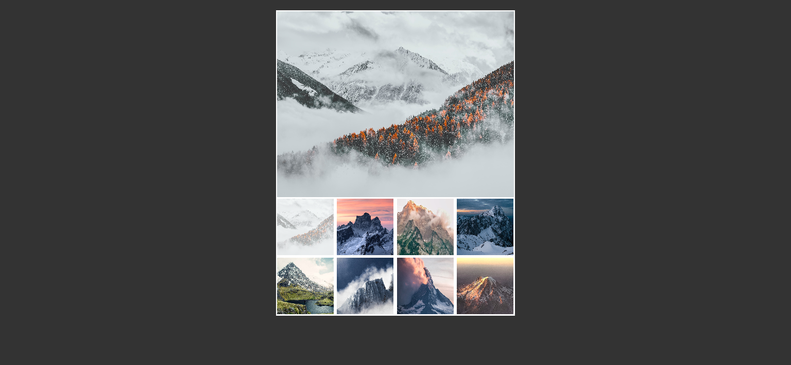
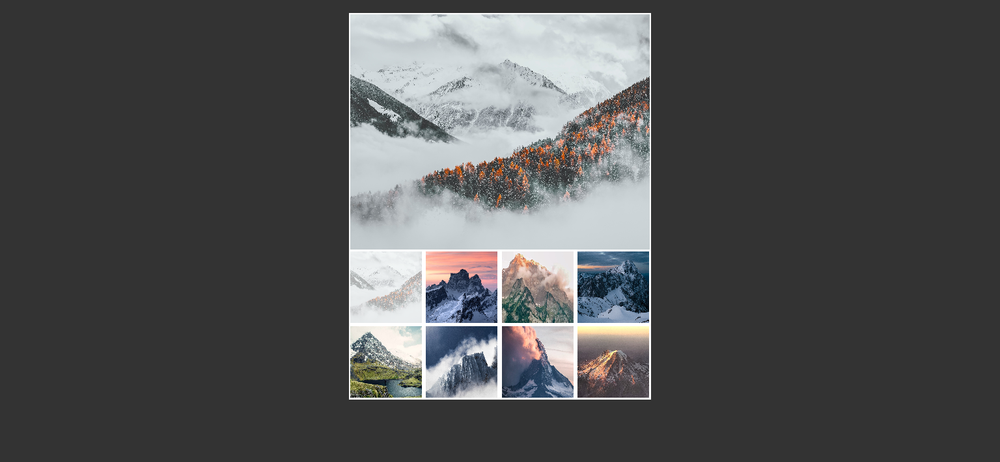
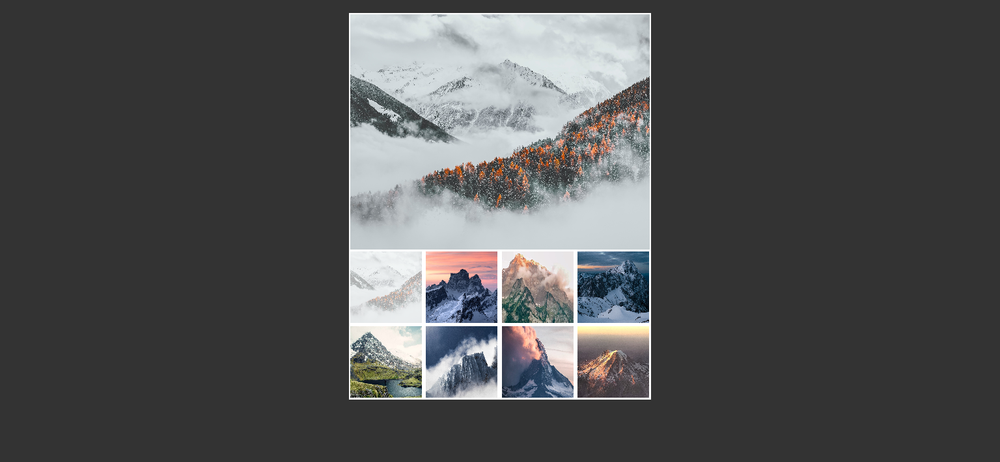

About the project
User-friendly image gallery using HTML, CSS and JavaScript technologies. The selected image is displayed in the main viewframe and greyed out in the gallery below.
 

User-friendly image gallery using HTML, CSS and JavaScript technologies. The selected image is displayed in the main viewframe and greyed out in the gallery below.
